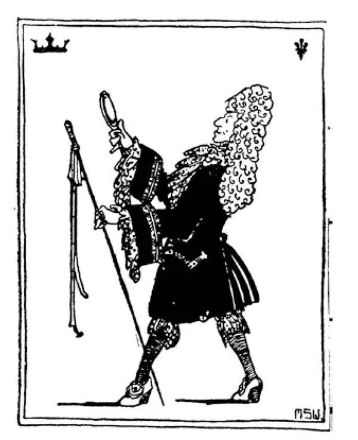
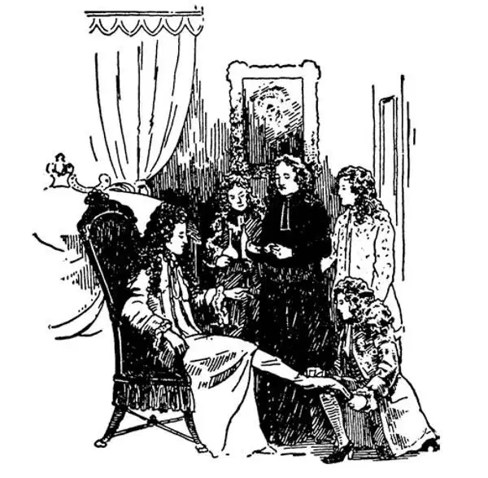

72
Red Cap and Red Heels
红帽子和红鞋跟

THE last Louis I told you about was a saint—the Louis who went on the last Crusade.
I'm going to tell you now about two kings named Louis who were not saints—not by any means.
They were Louis XIII and Louis XIV and they ruled France while the Stuarts were reigning in the seventeenth century in England.
Louis XIII was king in name only. Another man told him what to do, and he did it. Strange to say, this other man was a great ruler of the church called a cardinal, who wore a red cap and a red gown. The cardinal's name was Richelieu.
Now, you are probably sick and tired of hearing about wars, but during the reign of Louis XIII, another long war started, and I must tell you something about it, for it lasted thirty years. It was therefore called the Thirty Years' War. It was different from most wars. It was not a war of one country against another. It was a war between the Protestants and Catholics.
Cardinal Richelieu was of course a Catholic and the real ruler of France, which was a Catholic country. Nevertheless, he took sides with the Protestants, for they were fighting a Catholic country called Austria, and he wanted to beat Austria. Most of the countries in Europe took part in this war, but Germany was the battleground where most of the fighting was done. Even Sweden, a northern country of Europe which we have not mentioned before, took part. The king of Sweden at this time was named Gustavus Adolphus, and he was called the Snow King because he was king of such a cold country, and also the Lion of the North, for he was such a brave fighter. I am mentioning him particularly because of all kings and rulers in Europe at this time he was the finest character. Indeed, most of the other rulers thought only of themselves, and they would lie and cheat and steal and even murder to get what they wanted, but Gustavus Adolphus was fighting for what he thought was right. Gustavus Adolphus was a Protestant, and so he came down into Germany and fought on the side of the Protestants. He was a great general, and his army won. Unfortunately he himself was killed in battle. The Protestants came out ahead in the Thirty Years' War, and at last a famous treaty of peace was made called the Treaty of Westphalia. By this treaty it was agreed that each country should have whatever religion its ruler had; it could be Protestant or Catholic, as the ruler wished.
During the Thirty Years' War, the plague, that old deadly contagious disease we have heard of before, broke out in Germany. A little town named Oberammergau prayed that it might be spared. The townspeople vowed that if they were spared they would give a play of Christ's life once every ten years. They were spared, and so every ten years, ever since then, with only a few exceptions, they have been giving what is called the Passion Play. Tens of thousands of tourists from all over the world travel to this little out-of-the-way town to see the townspeople act the story of Christ's life. The play is given on Sundays during the summer of the tenth year and lasts all day long. About seven hundred people take part. It is a great honor to be chosen to play the part of a saint, and it is the highest honor to be selected to play the part of Christ.
The next French king to rule after Louis XIII and Richelieu was Louis XIV.
The people in England had at last succeeded in getting the power to rule themselves through their Parliament. But in France, Louis would let no one rule but himself. He said, “I am the state,” and he would let no one have a say in the government. This was the same as the Stuarts' Divine Right of Kings that the English people had put an end to. Louis ruled for more than seventy years. This is the longest time that anyone in history has ever ruled.
Louis XIV was called the Grand Monarch, and everything he did was to show off. He was always parading and strutting about as if he were the leading character in a play and not just an ordinary human being. He wore corsets and a huge powdered wig and shoes with very high red heels, to make himself appear taller. He carried a long cane, stuck out his elbows, turned out his toes, and strutted up and down, for he thought these things made him seem grand, important, imposing.

Louis XIV（路易十四）
All this may sound as if Louis were a strange person with no sense, but you must not get that idea. In spite of his absurd manners, he made France the chief power in Europe. He was almost constantly fighting other countries, trying to increase the size of France and to add to his kingdom, but I have already told you so much about so many fights, that I'm not going to tell you any more about his just now, for you would probably not read it if I did. So France had her turn as leader of all the other countries, as Spain and England had had theirs as well.
Louis built a magnificent palace at Versailles in which were marble halls, beautiful paintings, and many huge mirrors in which he could see himself as he strutted along. The palace was surrounded by a park with wonderful fountains. The water for the fountains had to be brought a long distance, and it cost thousands of dollars to have the fountains play just for a few minutes. Even today sightseers visit Versailles to see the magnificent palace rooms and to watch the fountains play.

Louis XIV getting ready for bed（路易十四准备就寝）
But Louis surrounded himself not only with beautiful things. He also surrounded himself with all the most interesting men and women of his time. All those who could do anything exceptionally well, all those who could paint well or write well or talk well or play well or look well, he brought together to live with him or near by him. This was called his court . They were the chosen few who looked down on all the others.
This was all very fine for the people who were lucky enough to be in Louis's court. But the poor people of France, ordinary farmers and the men and women who worked in the towns, were the ones who had to pay Louis's expenses and those of his court. They were the ones who had to pay for his parties and balls and feasts and for all sorts of presents that he gave his friends. We shall soon see what happened. The poor people would not stand that sort of thing forever. “The worm will turn,” we say.
【中文阅读】
上一次我跟你说的那个路易是个圣徒——就是那个进行最后一次十字军东征的路易。
我现在要给你讲两个名叫路易的国王，不过他们可不是圣徒——绝对不是。
他们是路易十三和路易十四，17世纪就在斯图亚特王朝统治英国的时候，他们统治着法国。
路易十三只是名义上的国王。另有一人告诉他做什么，他就照着办。说来奇怪，这个人却是教会最主要的管理者之一，叫做红衣主教，红衣主教都头戴红帽子，身着红长袍。这位红衣主教名叫黎塞留。
现在听到战争你也许就厌烦了，但是在路易十三统治期间，又爆发了一场漫长的战争，我一定要给你讲一讲这场战争的故事，因为它持续了三十年，因此也称为“三十年战争”。这场战争和大多数战争不同。它不是一个国家对另一个国家的战争，而是新教徒和天主教徒之间的一场战争。
红衣主教黎塞留当然是天主教徒，而且是法国这个天主教国家真正的统治者。然而这一次，他支持新教徒，因为他们在和天主教国家奥地利打仗，而黎塞留想打败奥地利。大多数欧洲国家都参加了这场战争，但是大多数战争发生在德国。甚至瑞典，一个以前我们没有提到过的北欧国家，也参加了。那时的瑞典国王叫古斯塔夫斯•阿道弗斯，因为瑞典气候严寒，他被称为“雪王”，他还被称为“北方雄狮”，因为他十分英勇善战。我现在特别提到他，是因为他是当时欧洲所有国王和统治者中最杰出的一个人物。事实上，其他多数统治者只想到自己。为了得到自己想要的，他们会撒谎、欺骗、偷盗甚至谋杀，但是古斯塔夫斯•阿道弗斯则是为了自己认为的公正之道而战。古斯塔夫斯•阿道弗斯是新教徒，所以他南下德国，帮助新教徒作战。他是位杰出的将军，他的军队获胜了。不幸的是，他本人却在战争中阵亡了。新教徒最终在三十年战争中取得了优势，最终战争各方签订了一个著名的和平条约叫做《威斯特伐利亚合约》。各方在合约中同意：每个国家的官方宗教应由这个国家的统治者决定；按照统治者的愿望，无论选择新教还是天主教都可以。
在三十年战争期间，瘟疫，前面说过的那种古老、致命的传染病在德国爆发了。一个名为奥伯阿默高的小镇镇民祈祷自己能得以幸免。镇民们发下誓言，如果他们能得以幸免，躲过瘟疫，他们将每十年演出一场有关耶稣生平的戏剧。他们终于逃过了一劫，于是从此以后，每十年，除少数例外，他们都会演出一场所谓的“耶稣受难复活剧”。成千上万的旅游者从世界各地来到这个偏远小镇观看小镇居民表演耶稣生平的故事。演出在第十年夏天的一个星期日进行，要演一整天。大约有七百人参加。如果被选中扮演某个圣徒是莫大的荣幸，而被选中扮演耶稣基督则是最高的 荣耀。
路易十三和黎塞留之后的下一任法国国王是路易十四。
英国人民最终通过议会成功地获得了自己管理国家的权力。但是在法国，路易独揽政权，决不让他人染指。他声称“我就是国家”，任何人都无权干预国家大事。这和英国人民终止的斯图亚特王朝的“君权神授说”没有任何区别。路易统治了七十多年，堪称历史上在位时间最久的君主。
路易十四被称为“伟大的君主”，他做的每一件事情都是为了炫耀。他总是神气活现，趾高气扬地踱来踱去，就好像他是剧中的主角，而不是一个普通人。他身穿紧身外套，头戴一个极大的扑满香粉的假发，脚穿一双红色高跟鞋，好让自己显得高一点。他拿着一根长长的手杖，胳膊肘向外摆，脚尖朝外撇，高视阔步，走来走去，因为他认为这样的仪表和举止能让他显得尊贵威严，器宇轩昂。
这一切听上去好像路易是个古怪糊涂的人，但是你不要有这样的误解。尽管他的举止滑稽可笑，但是他让法国成为欧洲的主要强国。他几乎不断地和其他国家打仗，设法拓展法国的领土，扩张自己的王国，但是我给你讲了太多战争的故事，现在我不打算再说他的战争了，我要是再说，也许你就不想再读下去了。现在轮到法国成为其他国家的头领，就像西班牙和英国曾经那样。
路易在凡尔赛建造了一座宏伟的宫殿，里面有大理石的大厅、美丽的绘画，还有许多面大镜子，这样当他大摇大摆经过时，可以看到自己的样子。宫殿周围是一个庭园，庭园里有很多奇妙的喷泉。喷泉的水必须从很远的地方调来，泉水即使只喷几分钟也要花费大量的金钱。甚至今天去凡尔赛游览的观光客还要看看华丽的宫殿房间和喷泉表演。
但是路易十四不仅让他的周围有美丽的事物，他还把他那个时代最有趣的男人和女人都找来，让这些人围绕在自己身边。但凡在某个方面特别优秀的人，画画得特别好的人或者写作写得特别有趣的人或者说话特别机智的人或者表演特别动人的人或者长相特别俊美的人，他都把他们找来和自己住在一起或住在附近。这些人被称为“侍臣”。他们都是精选出来的极少数人，所以看不起其他人。
那些有幸成为路易侍臣的人受到优惠的待遇。但是法国的穷人，普通农夫，在城镇里工作的男男女女，却是为路易和他的侍臣花销付账的人。他们必须为他的各种聚会、舞会和宴会付账，为他送给朋友的各种礼物付账。我们很快就会看到后来发生了什么。穷人不可能永远忍受这类事情。我们说：“兔子急了也咬人，老实人被逼急了也要反抗。”